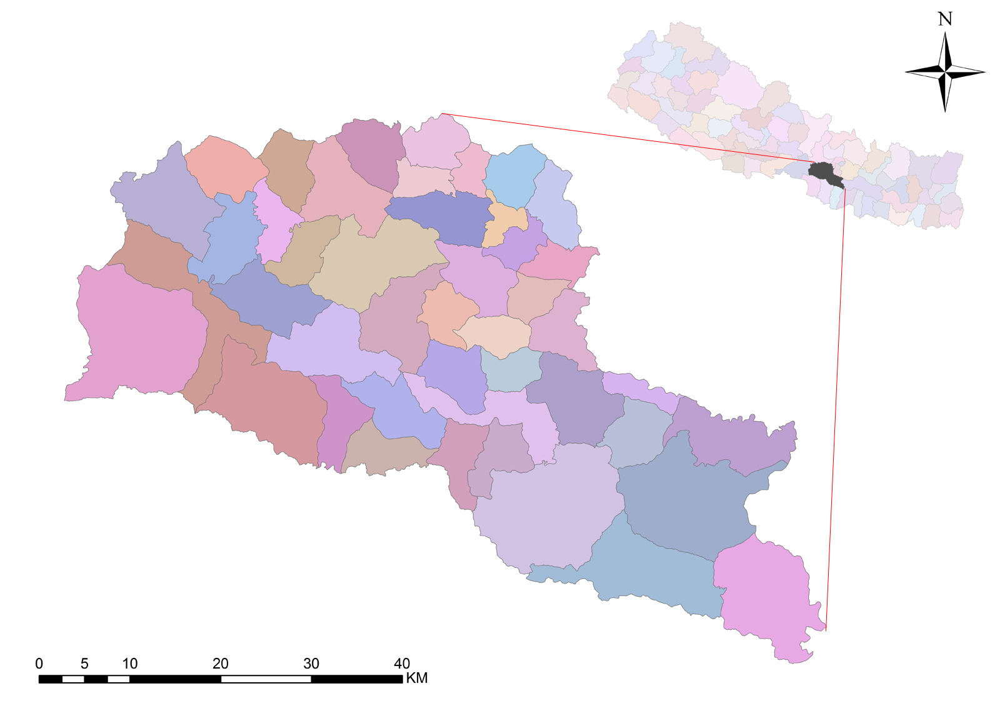

Introduction
Introduction to the District
Located at the center of the country, the name of this place is believed to be kept after the name of Sen Bansi King Mukunda Sen which was Mukundapur at the beginning. After a long duration of time people begin to call it as Makawanpur. This district sometimes used to be taken as link between the Capital(Kathmandu) and Mechi-Mahakali but after the construction of Prithvi Highway this district is in shade.
It is situated in between 66 Km long Mahabharat Range at the North and 92 Km long Chure Hill (Siwalik Hill) at the South. Recognised as the main entrance to the Capital this district is bordered with Kathmandu and Lalitpur. Construction of Tribhuwan Highway and Mahendra Highway has made transportation to eastern and western part of Nepal much easier. The next link road from the district headquarter(Hetauda) to the capital also has been constructed that passes along Phakhel, Humanebhanjyang, Pharping in a short time.
Filled with great natural beauty and peaceful environment, this district can win over the heart of any individual. Chitwan National Park and Parsa Wildlife Reserve has also covered some area of this district. Castles of "Sen Bansia" Kings, Makawanpur Gadhi (In Law's house of King Prithvinarayan Shah), next very important place Chisapani Gadhi, Tourism place Sahid Smarak, Laligurans and Sungava Natural Museums are some of the places that attracts national and international tourists to this district.
History
The social, cultural and economic part of this district is not found to be studied much seriously, but this district is found to be described in different sayings and writings since Mahabharat Period. It is believed that the panch pandavas reached makawanpur district during their Banbas. It also believed that the name Bhutandevi came from the name of Bhutani, sister of demon Hedamba with whom Bhimsen got married and gave birth to Ghatotkach, the demon son of Bhimsen.
It is also said that Indigeneous race of Nepal, Rai(Danuwar)s used to live around South-Eastern Bagmati River since three thound years ago and Faparbari VDC, Ward No. 1, Jhurjhure used to be their Capital. Similarly, it is also believed that there was a palace of Ghising King of Tamangs in Betini VDC, and now in this region 50% of the population is Tamang which is the proof of the fact. The only proof that King Narendradev of Malla Dynasty was a king was found in Chitlang VDC. The Ashok Chaitya built when Samrat Ashok came to visit Nepall, Shivalayas, Classical Equipments and Statues in Palung and Bajrabarahi and many other religious and historical places has proved Makawanpur district to have remarkable importance.
Basic Info
| Development Region: | Central Development Region |
| Zone: | Narayani |
| District: | Makawanpur |
| District Headquarted: | Hetauda |
| Election Area: | 4 |
| Ilaka: | 13 |
| Municipality: | 1 |
| VDCs: | 43 |
| Member of Constitutional Assembly: | 7(Including Samanupatik) |
| Religious, Historical and Tourism Spots:: |
Bhutandevi Temple(Hetauda), Churiyamai Temple(Chure Parvat), Trikhandi Mahadev Mandir(Bhainse), Bajrabarahi Mandir(Tistung), PunyaKshetra(Basamadi), Hrisheshwor Mahadev Temple(Daman), Narayan Mandir(Kulekhani), Manakamana Temple, Makawanpur Gadi, Chisapani Gadi, Shikhar Kateri(Anglo-Nepal War Spot), Jhurjhure, Taukhel, Bhatuwal, Pukunthali, Beteni, Hetauda, Indrasarovar, Sahid Smarak and National Park Area |
| Household | Male | Female | Total |
| 86,045 | 202083 | 213518 | 415601 |
Census Report 2011

fig: Map of Makawnapur District